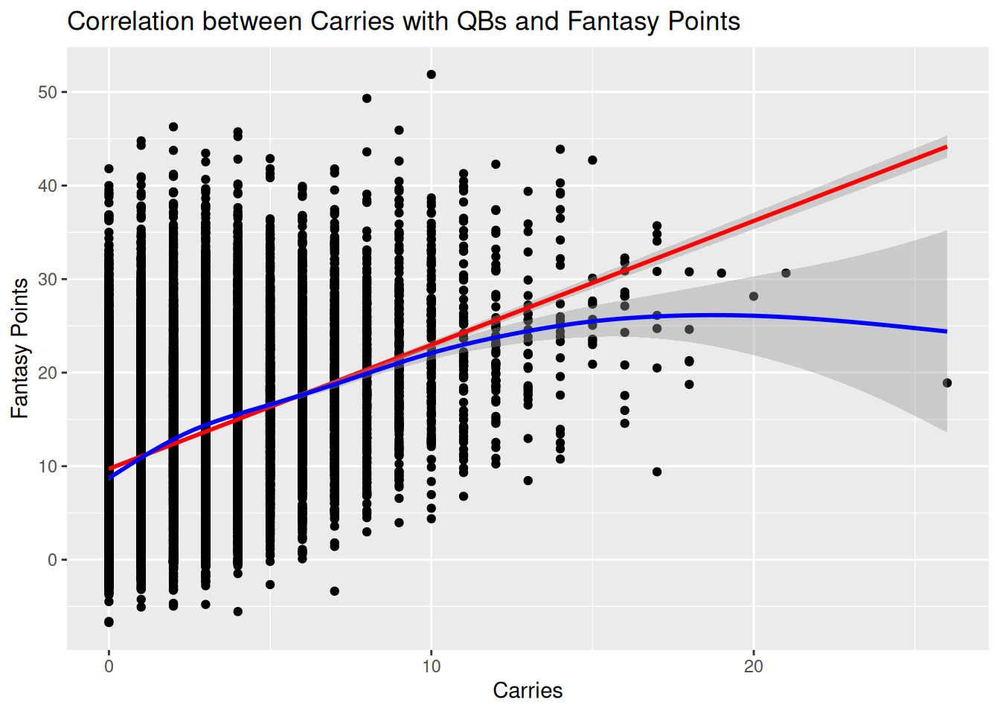

Code
#install.packages("remotes")
#remotes::install_github("DevPsyLab/petersenlab")
#remotes::install_github("FantasyFootballAnalytics/ffanalytics")
#update.packages(ask = FALSE)Jordan Wozniak
September 30, 2025
AI Disclosure: AI was not used.
Link to AI Transcript: not applicable
This study analyzed the impact of quarterback carries on fantasy points. Results showed that carries significantly increase scoring, though passing yards explain most variance. Overall, rushing provides an important independent boost to QB fantasy value.
The question of picking, if he was still in the league, were the Roethlisbergers of the league or the Josh Allens of the league. This topic is important because if you want to win your fantasy league, you need the best when it comes to scoring points. Would a QB like Josh Allen be a better pick than Matthew Stafford? Similar statistics can inference if this is true or false.
Is there a correlation between a QB’s rushing carries and their overall fantasy finish? Can we safely say that QBs who prioritize rushing carries tend to score more fantasy points than other QBs.
My hypothesis and prediction is that QBs with higher rushing carries will lead to more fantasy points produce by said player.
There is a reason why I picked carries over flat rushing yards. Through when I have played in multiple leagues over multiple leagues, I have seen that QBs that always use their legs, in turn more carries, tend to score more points than their opposing matchup. This isn’t true 100% of the time, but gives you a better chance to win that direct matchup.
The method that I chose to do for this research question was to do a correlation analysis on carries versus fantasy points. Create a regression model predictor with both of those items, and add an additional regression two predictor model with passing yards.
ggplot2::ggplot(
data = player_stats_weekly %>% filter(position == "QB"),
aes(
x = carries,
y = fantasyPoints)) +
geom_point() +
geom_smooth(
method = "lm", # linear best-fit line
color = "red") +
geom_smooth(
method = "gam", # nonlinear best-fit line
color = "blue"
) +
labs(
x = "Carries",
y = "Fantasy Points",
title = "Correlation between Carries with QBs and Fantasy Points"
)`geom_smooth()` using formula = 'y ~ x'
`geom_smooth()` using formula = 'y ~ s(x, bs = "cs")'
Call:
lm(formula = fantasyPoints ~ carries, data = player_stats_weekly %>%
filter(position %in% c("QB")), na.action = "na.exclude")
Residuals:
Min 1Q Median 3Q Max
-25.268 -6.603 -0.483 5.602 33.912
Coefficients:
Estimate Std. Error t value Pr(>|t|)
(Intercept) 9.71756 0.09517 102.11 <2e-16 ***
carries 1.32503 0.02580 51.36 <2e-16 ***
---
Signif. codes: 0 '***' 0.001 '**' 0.01 '*' 0.05 '.' 0.1 ' ' 1
Residual standard error: 8.235 on 16101 degrees of freedom
Multiple R-squared: 0.1408, Adjusted R-squared: 0.1407
F-statistic: 2638 on 1 and 16101 DF, p-value: < 2.2e-16# Standardization method: refit
Parameter | Std. Coef. | 95% CI
---------------------------------------------
(Intercept) | -5.5953e-18 | [-0.0143, 0.0143]
carries | 0.3752 | [ 0.3609, 0.3895]
Call:
lm(formula = fantasyPoints ~ carries + passing_yards, data = player_stats_weekly %>%
filter(position %in% c("QB")), na.action = "na.exclude")
Residuals:
Min 1Q Median 3Q Max
-17.5703 -3.1466 -0.1201 2.6699 24.9235
Coefficients:
Estimate Std. Error t value Pr(>|t|)
(Intercept) -1.6698831 0.0852692 -19.58 <2e-16 ***
carries 0.8841407 0.0152843 57.85 <2e-16 ***
passing_yards 0.0642118 0.0003644 176.19 <2e-16 ***
---
Signif. codes: 0 '***' 0.001 '**' 0.01 '*' 0.05 '.' 0.1 ' ' 1
Residual standard error: 4.813 on 16100 degrees of freedom
Multiple R-squared: 0.7066, Adjusted R-squared: 0.7065
F-statistic: 1.938e+04 on 2 and 16100 DF, p-value: < 2.2e-16# Standardization method: refit
Parameter | Std. Coef. | 95% CI
-----------------------------------------------
(Intercept) | -1.7684e-17 | [-0.0084, 0.0084]
carries | 0.2503 | [ 0.2419, 0.2588]
passing yards | 0.7625 | [ 0.7540, 0.7710]For this analysis, there were two different charts that were created. A plot diagram where it visually shows all QBs, their amount of carries, compared to their amount of fantasy points.
For the first graph, we can say that QBs with more carries tend to score more fantasy points.
For our regression model, we can say that a QB with 0 carries averages 9.7 fantasy points, while each carries will add about 1.3 fantasy points, on average. Since our p-value < 0.005, it is most certain that it will happen.
For the second regression model, I added two predictors, the addition of passing yards. We could go on and on with touchdowns, interceptions, but passing yards still shows that carries provide an independent boost to a QBs fantasy output.
The strength behind this study that there is a strong correlation by statistical evidence that it is safe to draft a QB with a high carries rate.
There could a few limitations to this study that could make or break it. There are some items out there can we can’t always predict. QBs can always have off games, there can be confounds that can arise, such as their passing rate for yards and touchdowns, the other defense’s ability to stop the run game, but that’s the name of the game.
This study demonstrates that both passing yards and carries are important predictors of quarterback fantasy performance. While passing yards account for the majority of variance in scoring, carries remain a significant and meaningful independent contributor. Overall, carries matter, providing a consistent and measurable boost to fantasy outcomes.
https://www.pff.com/news/fantasy-football-does-a-quarterbacks-rushing-ability-set-their-fantasy-floor-or-ceiling
https://www.dynastynerds.com/analytics/top-fantasy-stats-qb-rb-wr-te/
R version 4.5.2 (2025-10-31)
Platform: x86_64-pc-linux-gnu
Running under: Ubuntu 24.04.3 LTS
Matrix products: default
BLAS: /usr/lib/x86_64-linux-gnu/openblas-pthread/libblas.so.3
LAPACK: /usr/lib/x86_64-linux-gnu/openblas-pthread/libopenblasp-r0.3.26.so; LAPACK version 3.12.0
locale:
[1] LC_CTYPE=C.UTF-8 LC_NUMERIC=C LC_TIME=C.UTF-8
[4] LC_COLLATE=C.UTF-8 LC_MONETARY=C.UTF-8 LC_MESSAGES=C.UTF-8
[7] LC_PAPER=C.UTF-8 LC_NAME=C LC_ADDRESS=C
[10] LC_TELEPHONE=C LC_MEASUREMENT=C.UTF-8 LC_IDENTIFICATION=C
time zone: UTC
tzcode source: system (glibc)
attached base packages:
[1] stats graphics grDevices utils datasets methods base
other attached packages:
[1] lubridate_1.9.4 forcats_1.0.1 stringr_1.6.0 dplyr_1.1.4
[5] purrr_1.2.0 readr_2.1.5 tidyr_1.3.1 tibble_3.3.0
[9] tidyverse_2.0.0 ggridges_0.5.7 GGally_2.4.0 ggplot2_4.0.0
[13] effectsize_1.0.1 correlation_0.8.8 DescTools_0.99.60 psych_2.5.6
[17] XICOR_0.4.1 petersenlab_1.2.0
loaded via a namespace (and not attached):
[1] Rdpack_2.6.4 DBI_1.2.3 mnormt_2.1.1
[4] gridExtra_2.3 gld_2.6.8 sandwich_3.1-1
[7] readxl_1.4.5 rlang_1.1.6 magrittr_2.0.4
[10] multcomp_1.4-29 e1071_1.7-16 compiler_4.5.2
[13] mgcv_1.9-3 vctrs_0.6.5 reshape2_1.4.5
[16] quadprog_1.5-8 pkgconfig_2.0.3 fastmap_1.2.0
[19] backports_1.5.0 labeling_0.4.3 pbivnorm_0.6.0
[22] rmarkdown_2.30 psychTools_2.5.7.22 tzdb_0.5.0
[25] haven_2.5.5 nloptr_2.2.1 xfun_0.54
[28] jsonlite_2.0.0 parallel_4.5.2 lavaan_0.6-20
[31] cluster_2.1.8.1 R6_2.6.1 stringi_1.8.7
[34] RColorBrewer_1.1-3 boot_1.3-32 rpart_4.1.24
[37] estimability_1.5.1 cellranger_1.1.0 Rcpp_1.1.0
[40] knitr_1.50 zoo_1.8-14 parameters_0.28.2
[43] base64enc_0.1-3 timechange_0.3.0 Matrix_1.7-4
[46] splines_4.5.2 nnet_7.3-20 tidyselect_1.2.1
[49] rstudioapi_0.17.1 yaml_2.3.10 codetools_0.2-20
[52] lattice_0.22-7 plyr_1.8.9 withr_3.0.2
[55] bayestestR_0.17.0 S7_0.2.0 coda_0.19-4.1
[58] evaluate_1.0.5 foreign_0.8-90 survival_3.8-3
[61] ggstats_0.11.0 proxy_0.4-27 pillar_1.11.1
[64] checkmate_2.3.3 rtf_0.4-14.1 stats4_4.5.2
[67] reformulas_0.4.2 insight_1.4.2 generics_0.1.4
[70] mix_1.0-13 hms_1.1.4 scales_1.4.0
[73] rootSolve_1.8.2.4 minqa_1.2.8 xtable_1.8-4
[76] class_7.3-23 glue_1.8.0 emmeans_2.0.0
[79] Hmisc_5.2-4 lmom_3.2 tools_4.5.2
[82] data.table_1.17.8 lme4_1.1-37 Exact_3.3
[85] fs_1.6.6 mvtnorm_1.3-3 grid_4.5.2
[88] mitools_2.4 rbibutils_2.4 datawizard_1.3.0
[91] colorspace_2.1-2 nlme_3.1-168 htmlTable_2.4.3
[94] Formula_1.2-5 cli_3.6.5 expm_1.0-0
[97] viridisLite_0.4.2 gtable_0.3.6 R.methodsS3_1.8.2
[100] digest_0.6.38 TH.data_1.1-4 htmlwidgets_1.6.4
[103] farver_2.1.2 htmltools_0.5.8.1 R.oo_1.27.1
[106] lifecycle_1.0.4 httr_1.4.7 MASS_7.3-65